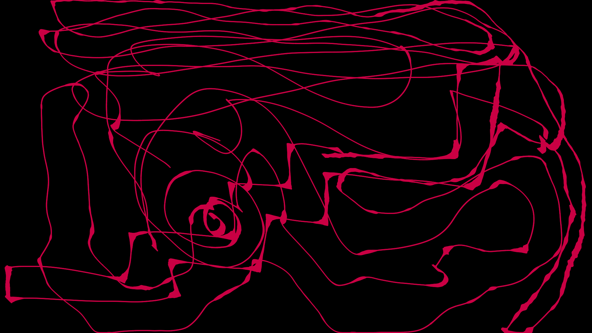

I’m Eli, one of the developers of Herman Electro. In this column, other Herman developers and I will alternate talking about the design of the game and our experience with it.
Last week, Ben (one of the other developers) talked about how we make Herman Electro a game that can be played many times. However, the easiest way to accomplish this is simply to have a ton of content. So far, there are over 400 different "rooms" (i.e. individual puzzles) contained in the game. In order to get to this point, all the game designers developed their own process for making a room. Today, I am going to walk you through how I personally approach puzzle design. Because this is my own personalized procedure, I am going to start with a little bit of information about me.
I am one of those people who is constantly doodling. Whether I’m in class or doing homework, if I have a pen and paper in front of me, I will be drawing something. My "drawings" have little form or substance, they typically end up something like this:
This particular doodle I drew on my phone (yes, my phone has a stylus which I exclusively use for drawing stuff like this), but the main point is that my doodles very rarely have a pattern. However, they do provide one key benefit. Drawing erratically and looking at the resulting shapes helps me think. I don’t really know why, but sometimes I come up with the answer to a math problem because I drew a particularly long line on my scratch paper. Surprisingly, this "call to doodle" actually helps out during game design.
I also am under the firm belief that a wrong answer is better than no answer. While programming, I will often code something in the worst and easiest possible way. Most of the time, whatever I did doesn’t work at all. But after the first iteration is done, it is much easier to fix bugs and clean up the code to get a working, clean implementation. Doing stuff wrong is the first step towards doing something right. The nice thing is that doing something randomly is the easiest way to do something wrong.
Whenever I sit down to design a puzzle for Herman Electro, I load up the game, enter our editor mode, and draw random walls everywhere with no purpose.
In Herman, we have developed an "editor mode" toolkit that essentially lets us draw whatever tile we want onto the game-screen. This allows me to directly translate my doodling impulse into something approaching a Herman room. However, this is a really, really poorly designed puzzle. First of all, there’s no way to win. There’s also nothing at all to think about. What this room does have, though, is an idea contained inside of it.
Without an idea, it is impossible to create anything. Every room has to have something interesting about it, a central idea. I like to call this the "kernel" of the room. Doodling in this fashion creates a really bad room, but sometimes that kernel appears all by itself. In this case, the kernel is a button surrounded by walls.
In Herman, to press a button you have to walk on it from somewhere else. Thus, with a button surrounded by walls, you will get stuck and will need to use a tool to escape.This kernel can be expanded a little bit into a central idea.
This is the final form of the "kernel" of what will become my finished room. I refined the random noise of my doodle into something usable and fun. My next step is to make a rough playable sketch utilizing the kernel. I decided to copy my base outline 4 times and added a path.
Finally, a finished room! Just by adding the first thing that came to mind, I turned my kernel into a playable puzzle. At this point, I act as if I will make no more changes, and go through the motions of adding the puzzle to the game.
Herman Electro is a game where each puzzle has multiple solutions. This way, the same puzzle plays completely differently depending on what tools you had. Thus, the first step in adding a room to the game is to look for every possible solution and write them down. The first solution to this puzzle that I noticed required 2 saws.

You can see here that Herman has to trap himself on the button in order to win. To beat the room, the player needs to actively engage with the kernel of the puzzle. That is the most important thing for any puzzle I design. However, one solution is not enough, and so I continued looking. Unfortunately, I discovered this:
And in a moment, all my previous work had been invalidated. Nobody would ever get stuck on my button contraption because they can just saw into the end tile. This is the kind of thing that happens all the time when designing a puzzle. When testing, a very obvious and cheaper solution appears and invalidates the kernel of the room. To solve this, I simply had to block off that area with even more walls.
The black sections of the level represent areas that the player can’t see. Thus, I also needed to add trapdoors so that the toolbox (the tile at the end of the puzzle) would always be visible. This happens all the time in room design. Once the room is designed, it is quickly broken, and so it needs to be refined a bit more. In this case, it had to be refined twice. First, the extra walls needed to be added. Second, the trapdoors had to be placed to give light to the room.
Finally, I tested the room a bit more, found a new 1 saw, 1 water solution, and added the room to the main game under the name "trap_buttons".
4 minutes later, I get a notification from GitHub saying "themost1: 1 new commit pushed to master - Added cool missing sol to trap_buttons". Ben had found a completely different solution requiring 1 saw and 1 water. This new solution was in fact cooler (in my mind) than any of the solutions I had intended for the room.

This solution requires the player to knowingly cut off power to something they normally would want powered because they have a way of bypassing it. Meanwhile, it still has the danger of getting trapped on a button. In both these ways, this solution is a lot more interesting than anything I had intentionally designed.
In fact, most puzzles in Herman are created in a similar fashion. One of the developers creates a cool looking room based on some premise, and then while playing the game a much cooler solution is discovered. A lot of great designs can happen by accident, and that’s great.
Design in general is a process of creativity and refinement. Starting from random noise, I find a kernel of a good idea. This is then expanded outwards by doing the easiest possible thing, until I get something I think is playable. However, this process also has its own “random noise”, and the rooms it creates always have issues. I then refine this further, until eventually a finished room is formed.
I find this process is ideal for the way I think, but the great thing is that everyone thinks differently. In future posts, you will see other team member’s philosophies towards design, and hopefully you can extract something useful from them.
Thank you for reading, and see you next week!
_________
If you have any questions or comments, feel free to email us at hermanelectrogame@gmail.com. You can follow our progress and see more posts and gifs on our Twitter account, @HermanElectro.